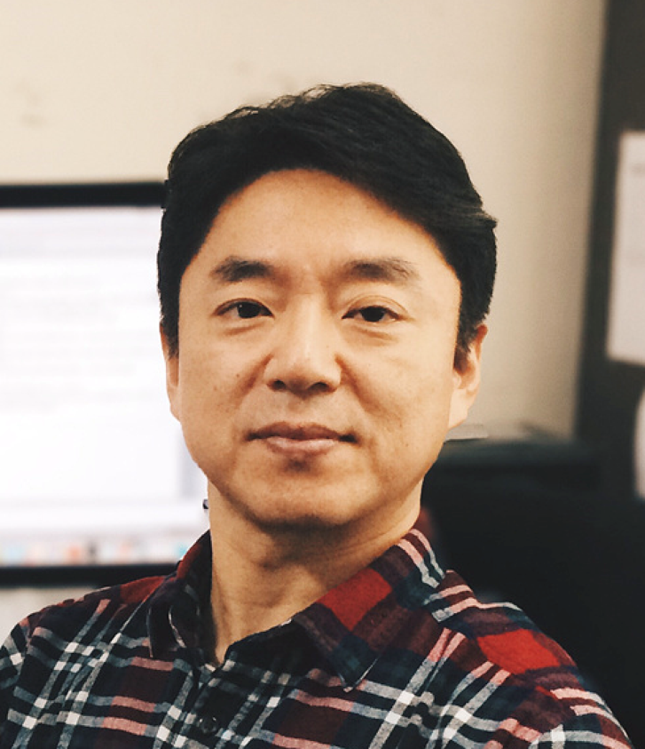

IEEE NVMSA 2021 Technical Program
August 18
Live Keynote 1 (09:00 ~ 10:00)
Title: Computational Storage: Another Over-hyped Fantasy? TBA
Speaker: Tong Zhang, Professor, Rensselaer Polytechnic Institute (RPI)
Abstract: As a hot topic today, computational storage has a beautifully simple rationale: Moving computational tasks closer to where data reside could improve the overall system performance/efficiency. Intuitively, this simple rationale makes a perfect sense and cannot be possibly refuted. However, its large-scale commercial success has remained elusive so far, despite so many awesome research papers and 100s' millions of dollars spent on its R&D. This disappointing status quo warrants doubts and skepticisms: Will it turn out to be an over-hyped fantasy just like many others we have seen over the years? Are there any fatal flaws in this simple idea? Facing these questions, proponents of computational storage must be brutally honest to themselves and humbly search for the (inconvenient) truth, other than conveniently blaming the industry reluctance/laziness on embracing new and disruptive technologies. In this talk, I will share ScaleFlux view on the pitfalls of prior and on-going R&D efforts, and what is the correct (or at least the best) way to commence its commercialization journey. I will also show that there is still a large room for research innovations in this area, despite many papers published over the past 20 years. Finally, although this talk solely focuses on computational storage, the lessons we learned could also help to prevent "in-memory computing" or "computational memory" (another hot topic today) from becoming yet another academic fantasy.
Biography: Tong Zhang is currently a Professor in the Electrical, Computer and Systems Engineering Department at Rensselaer Polytechnic Institute (RPI), NY. In 2002, he received the Ph.D. degree in electrical engineering from the University of Minnesota and joined the faculty of RPI. He has graduated 19 PhD students, and authored/co-authored over 160 papers, with over 5,000 citations and h-index of 40. Among his research accomplishments, he made pioneering contributions to enabling the pervasive use of low-density parity-check (LDPC) code in commercial HDDs/SSDs and establishing the research area of flash memory signal processing. In 2014, he co-founded ScaleFlux (San Jose, CA) to spearhead the commercialization of computational storage drives, and currently serves as its Chief Scientist. He is an IEEE Fellow.
Moderator: Guangyu Sun (Peking University)
Session 1: Best Paper Candidates (10:30 ~ 12:00)
Session Chair: TBA
- Approximate Programming Design for Enhancing Energy, Endurance and Performance of Neural Network Training on NVM-based Systems
Chien-Chung Ho (National Chung Cheng University and National Cheng Kung University), Wei-Chen Wang (Macronix International Co., Ltd.), Te-Hao Hsu, Zhi-Duan Jiang (National Chung Cheng University) and Yung-Chun Li (Macronix International Co., Ltd.)
- High Area/Energy Efficiency RRAM CNN Accelerator with Pattern-Pruning-Based Weight Mapping Scheme
Songming Yu, Lu Zhang, Jingyu Wang, Jinshan Yue, Zhuqing Yuan, Xueqing Li, Huazhong Yang and Yongpan Liu (Tsinghua University)
- A Novel Multi-Context Non-Volatile Content-Addressable Memory Cell and Multi-Level Architecture for High Reliability and Density
Xian Wang, Deming Zhang, Kaili Zhang, Erya Deng, You Wang and Weisheng Zhao (Beihang University)
Session 2: Emerging Memory Technologies (13:30 ~ 15:00)
Session Chair: TBA
- Mitigating Adversarial Attack for Compute-in-Memory Accelerator Utilizing On-chip Finetune
Shanshi Huang, Hongwu Jiang and Shimeng Yu (Georgia Institute of Technology)
- A Non-volatile Computing-in-Memory ReRAM Macro using Two-bit Current-Mode Sensing Amplifier
Qiqiao Wu, Wenhao Sun, Junpeng Wang, Xuefei Bai (University of Science and Technology of China), Feng Zhang (Chinese Academy of Sciences), Song Chen and Yi Kang (University of Science and Technology of China)
- Exploring Skyrmion Racetrack Memory for High Performance Full-Nonvolatile FTL
Ya-Hui Yang (National Taipei University of Technology), Yu-Pei Liang (Academia Sinica), Cheng-Hsiang Tseng and Shuo-Han Chen (National Taipei University of Technology)
Session 3: Invited Session I (15:30 ~ 17:00)
Session Chair: TBA
August 19
Live Keynote 2 (09:00 ~ 10:00)

Title: TBA
Speaker: Youjip Won, Professor, Korea Advanced Institute of Science and Technology (KAIST)
Abstract: TBA
Biography: TBA
Moderator: Ming-Chang Yang (The Chinese University of Hong Kong)
Session 4: Hybrid Memory (10:30 ~ 12:00)
Session Chair: TBA
- OCTO+: Optimized Checkpointing of B+ Trees for Non-Volatile Main Memory Wear-Leveling
Christian Hakert, Roland Kühn, Kuan-Hsun Chen, Jian-Jia Chen and Jens Teubner (Technische Universit¨at Dortmund)
- Scheduling-Aware Prefetching: Enabling the PCIe SSD to Extend the Global Memory of GPU Device
Tse-Yuan Wang, Chun-Feng Wu, Che-Wei Tsao (National Taiwan University and Academia Sinica), Yuan-Hao Chang (Academia Sinica) and Tei-Wei Kuo (National Taiwan University and City University of Hong Kong)
- HBTree: an Efficient Index Structure Based on Hybrid DRAM-NVM
Yuanhui Zhou, Taotao Sheng (Huazhong University of Science and Technology and Wuhan National Laboratory for Optoelectronics) and Jiguang Wan (Huazhong University of Science and Technology, Shenzhen Huazhong University of Science and Technology, and Wuhan National Laboratory for Optoelectronics)
Session 5: Persistent Memory (13:30 ~ 15:00)
Session Chair: TBA
- PMap: A Non-volatile Lock-free Hash Map with Open Addressing
Kenneth Lamar, Christina Peterson, Damian Dechev (University of Central Florida), Roger Pearce, Keita Iwabuchi and Peter Pirkelbauer (Lawrence Livermore National Laboratory)
- Designing a persistent-memory-native storage engine for SQL database systems
Shohei Matsuura (Yahoo Japan Corporation)
- An Empirical Study of NVM-based File System
Hongwei Duan, Liang Shi, Qingfeng Zhuge, Edwin Hsing-Mean Sha, Changlong Li and Yujiong Liang (East China Normal University)
Session 6: Invited Session II (15:30 ~ 17:00)
Session Chair: TBA